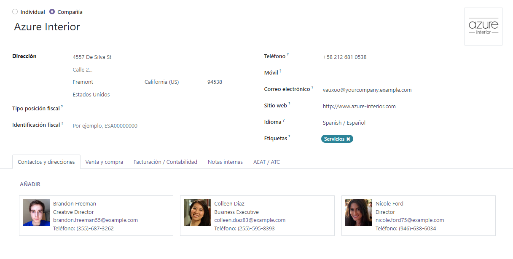

Contactos¶
La aplicación Contactos viene instalada en todas las bases de datos de Odoo. Los contactos se crean para los clientes con los que la empresa realiza negocios a través de Odoo. Un contacto es un repositorio de información comercial vital, que facilita la comunicación y las transacciones comerciales.
Formulario de contacto¶
Para crear un nuevo contacto, navega a la :menuselection:aplicación Contactos y haz clic en :guilabel:Crear. Aparecerá un nuevo formulario donde se puede añadir diversa información de contacto.
Tipo de contacto¶
Odoo permite tanto contactos de tipo :guilabel:Individual como de tipo :guilabel:Empresa. Selecciona :guilabel:Individual o :guilabel:Empresa, dependiendo del tipo de contacto que se esté añadiendo.
Nombre¶
Primero, rellena el nombre del :guilabel:Individual o de la :guilabel:Empresa. Este es el nombre que aparecerá en toda la base de datos. Este campo es obligatorio.
Truco
Los contactos :guilabel:Individuales pueden tener un contacto de :guilabel:Empresa vinculado a ellos. Después de seleccionar :guilabel:Individual, aparecerá un nuevo campo :guilabel:Nombre de la Empresa… debajo del campo del nombre.
Dirección¶
A continuación, introduce la :guilabel:Dirección de la :guilabel:Empresa o del :guilabel:Individual.
Truco
Si se elige la opción :guilabel:Individual, entonces se puede seleccionar el tipo de dirección desde un menú desplegable. Las opciones de este menú incluyen: :guilabel:Contacto, :guilabel:Dirección de Facturación, :guilabel:Dirección de Entrega, :guilabel:Otra Dirección y :guilabel:Dirección Privada.
Campos adicionales¶
En el formulario inicial se incluyen detalles adicionales. Los siguientes campos están disponibles:
VAT: Value Added Tax number.
Citizen Identification: citizen or government identification number (only available on Individual).
Job Position: list the job position of the Individual (only available on Individual).
Guilabel: Teléfono: Indica el número de teléfono (con código de país). Realiza una llamada, envía un SMS o un mensaje de WhatsApp al pasar el cursor sobre el campo en el formulario guardado y hacer clic en la opción deseada.
Guilabel: Móvil: Indica el número de teléfono móvil (con código de país). Realiza una llamada, envía un SMS o un mensaje de WhatsApp al pasar el cursor sobre el campo en el formulario guardado y hacer clic en la opción deseada.
Guilabel: Correo Electrónico: Ingresa la dirección de correo electrónico con el dominio.
Guilabel: Sitio Web: Ingresa la dirección completa del sitio web, comenzando con http o https.
Guilabel: Título: selecciona Doctor, Señora, Señorita, Señor, Profesor o crea uno nuevo directamente desde este campo.
Guilabel: Etiquetas: ingresa etiquetas preconfiguradas escribiéndolas en el campo o haciendo clic en el menú desplegable y seleccionando una. Para crear una nueva, escribe la nueva etiqueta en el campo y haz clic en Crear en el menú desplegable resultante.
Pestaña de contactos y direcciones¶
Al final del formulario de contacto hay varias pestañas. En la pestaña Contactos y Direcciones, se pueden agregar contactos asociados con una Empresa y direcciones relacionadas. Por ejemplo, se puede listar aquí a una persona de contacto específica para la empresa.
Se pueden agregar múltiples direcciones tanto en contactos de Individual como de Empresa. Para hacerlo, haz clic en Agregar en la pestaña Contactos y Direcciones. Al hacerlo, se mostrará un formulario emergente Crear Contacto, en el cual se pueden configurar direcciones adicionales.
En el formulario emergente :guilabel:Crear Contacto, comienza haciendo clic en el campo predeterminado :guilabel:Otra Dirección en la parte superior para mostrar un menú desplegable con opciones relacionadas con la dirección.
Seleccione una de las siguientes opciones:
Contacto: añade otro contacto al formulario existente del contacto.
Dirección de factura: añade una dirección de factura específica al formulario existente de contacto.
Dirección de entrega: añade una dirección de entrega específica al formulario existente de contacto.
Otra dirección: añade una dirección de entrega alterna al formulario existente de contacto.
Dirección privada: añade una dirección privada al formulario de contacto existente.
Una vez que se selecciona una opción, ingresa la información de contacto correspondiente que se debe utilizar para el tipo de dirección especificado.
Agrega el Nombre de Contacto, la Dirección, el Correo Electrónico, junto con los números de Teléfono y/o Móvil a continuación.
Establece el Puesto de Trabajo, que aparece si se ha seleccionado el tipo de dirección Contacto. Esto es similar al contacto Individuo.
Para agregar una nota, haz clic en el campo de texto junto a Notas, y escribe cualquier información que sea aplicable al cliente o contacto.
Luego, haz clic en Guardar y Cerrar para guardar la dirección y cerrar la ventana Crear Contacto. O bien, haz clic en Guardar y Nuevo para guardar la dirección e ingresar inmediatamente otra.
Pestañas de venta y compra¶
A continuación, está la pestaña Ventas y Compras, que solo aparece cuando las aplicaciones Ventas, Compras o Punto de Venta están instaladas.
La Posición Fiscal se puede establecer en la pestaña Ventas y Compras. Selecciona una Posición Fiscal del menú desplegable.
Sección de ventas¶
Bajo el encabezado Ventas, se puede asignar un Vendedor específico a un contacto. Para hacerlo, haz clic en el campo desplegable Vendedor y selecciona uno. Crea un nuevo Vendedor escribiendo el nombre del usuario y haciendo la selección adecuada.
Ciertos Términos de Pago, o una Lista de Precios específica, también se pueden establecer, si es necesario. Haz clic en el menú desplegable junto a Términos de Pago y cámbialo a uno de los Términos de Pago preseleccionados, o Crea uno nuevo. Selecciona el menú desplegable Lista de Precios para elegir la Lista de Precios adecuada.
Haz clic en el campo Método de Entrega para seleccionar una opción del menú desplegable.
Sección de Punto de Venta¶
Bajo el encabezado Punto de Venta, ingresa un Código de Barras que se pueda utilizar para identificar al contacto. Usa el campo Puntos de Fidelidad para rastrear los puntos que el usuario ha ganado como parte de un Programa de Fidelidad.
Sección de compras¶
Especifica los :guilabel:Términos de Pago, la información de la :guilabel:Casilla 1099 y un :guilabel:Método de Pago preferido aquí. También se puede configurar un :guilabel:Recordatorio de Recibo en este apartado.
Sección Varios¶
Bajo el encabezado Varios, utiliza el campo Referencia para agregar cualquier información adicional para este contacto. Si este contacto debe ser accesible solo para una empresa en una base de datos multiempresa, selecciónala en la lista desplegable del campo Empresa. Usa el menú desplegable Sitio Web para restringir la publicación de este contacto a un sitio web específico (si trabajas en una base de datos con múltiples sitios web). Selecciona una o más Etiquetas de Sitio Web para ayudar a filtrar clientes publicados en la página web /clientes. Selecciona una Industria para este contacto desde el menú desplegable. Usa el campo Políticas de SLA para asignar una política de SLA de Helpdesk a este contacto.
Pestaña de contabilidad¶
La pestaña Contabilidad aparece cuando la aplicación Contabilidad está instalada. Aquí, un usuario puede agregar cualquier Cuenta Bancaria relacionada o establecer asientos contables predeterminados.
Bajo el encabezado Varios, utiliza el campo LEI para ingresar un Identificador de Entidad Legal, si es necesario.
Pestaña de notas internas¶
Después de la pestaña Contabilidad, se encuentra la pestaña Notas Internas, donde se pueden dejar notas en este formulario de contacto, de la misma manera que en el formulario de contacto mencionado anteriormente.
Pestaña de asignación de partner¶
A continuación está la pestaña Asignación de Socios, que por defecto incluye una sección de Geolocalización y otras opciones para socios, como las configuraciones de Activación de Socios y Revisión de Socios. Estas opciones están únicamente presentes cuando el módulo Distribuidores Empresariales está instalado.
Pestaña de membresía¶
Finalmente, está la pestaña Membresía, que puede ayudar a los usuarios a gestionar cualquier membresía que se esté ofreciendo a este contacto específico. Cabe destacar que esta pestaña solo aparece cuando la aplicación Miembros está instalada.
Archivar contactos¶
Si un usuario decide que ya no quiere tener este contacto activo, el registro puede ser archivado. Para hacerlo, ve al menú Acción en la parte superior del formulario de contacto y haz clic en Archivar.
Luego, haz clic en OK en la ventana emergente de Confirmación que aparece.
Con este contacto archivado exitosamente, como se indica mediante un banner en la parte superior, no aparece en la página principal de contactos, pero aún se puede buscar utilizando el filtro Archivado.
Truco
Un contacto puede ser desarchivado si el usuario decide trabajar con él nuevamente. Para hacerlo, simplemente haz clic en el menú Acción nuevamente en la parte superior del formulario de contacto archivado y selecciona Desarchivar. Al hacerlo, se elimina el banner Archivado y el contacto es restaurado.